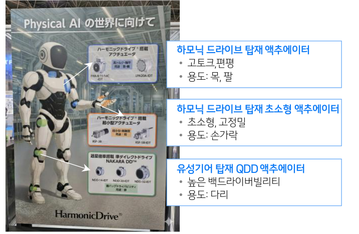

로봇과 자동화 — 휴머노이드는 «관절 부품» 싸움, 협동로봇은 «솔루션» 전환
원천 한계
- 로봇 관련 원천 16건(2025-05~2026-11), 연도별 2025년 4건 · 2026년 12건 → 사실상 2026년 시각
- 산업물은 2건뿐(삼성 2026-03-11 섹터 이니시에이션, LS 2026-03-17 휴머노이드 심층). 나머지는 협동로봇·액추에이터 업체 리포트에서 산업 사실만 추출
- 미판독 스캔 3건(미래에셋 2026-04-23·05-01·10-30), 무관 1건(메리츠 2025-12-24, 지분 매각) 제외
한눈에 보기
결론
- 휴머노이드 출하는 2025년 약 1.3만 대로 막 시작(중국 87%) → 2026~27년은 «실증·초기 양산», 대중화 임계가는 대당 2~3만 달러
- 원가의 절반 이상이 관절(액추에이터 = 모터+감속기+센서) → 부품 단가 하락 속도가 시장 개화 시점을 결정
- 협동로봇은 단품 판매 → 턴키 솔루션(EOL·팔레타이징)으로 이동, 수요는 북미 중심 회복
| 항목 | 값 | 세부 | 출처 |
|---|---|---|---|
| 휴머노이드 출하 2025 | 13,318대 | 2024 2,300대 · 중국 87% | (LS, 2026-03-17; 삼성, 2026-03-11) |
| 대당 제조원가 | 3.5~6만달러 | 액추에이터·모션 40~50% | (LS, 2026-03-17) |
| 대중화 임계가 | 2~3만달러 | 누적 100만 대 생산 필요 | (LS, 2026-03-17) |
| 하모닉 감속기 1위 점유율 | 82% | 2023년, 2위 중국 7% | (삼성, 2026-03-11) |
| 액추에이터 주문(국내 1개사) | 100만개+ | 2026년, 2025년 40만개 | (하나, 2026-04-23) |
flowchart LR subgraph D["전방 수요"] L["노동력 감소<br/>임금 상승"] --> B2B["제조·물류 B2B<br/>(먼저)"] L --> B2C["가정 B2C<br/>(2030년대~)"] end subgraph R["완제품"] H["휴머노이드"] C["협동로봇"] I["산업용 로봇·AMR"] end subgraph A["관절 = 액추에이터"] M["모터<br/>코어리스·프레임리스"] G["감속기<br/>하모닉·RV·유성"] S["스크류·센서<br/>엔코더·베어링"] end AI["두뇌·데이터<br/>VLA·월드모델"] --> H B2B --> H B2B --> C B2B --> I A --> H A --> C A --> I
구성: 삼성(2026-03-11)·LS(2026-03-17) 내용을 엮음
- 관련 노트: 00_기계_index · 01_기계_용어집 · 02_기계_수요와전방 · 03_기계_건설기계 · 05_기계_산업용기계와부품 · 06_기계_시장규모모델 · 07_기계_하우스시각_변경이력 · 08_기계_트래킹캘린더
① 산업 구조·기초
요약
- 로봇 = 두뇌(대뇌) + 동작 제어(소뇌) + 몸(하드웨어). 몸의 핵심은 관절 액추에이터
- 미국은 «지능·손(조작)», 중국은 «몸·다리(이동)·양산»에서 출발했지만 목표는 둘 다 휴머노이드
로봇의 3계층
| 계층 | 하는 일 | 구성 요소 | 출처 |
|---|---|---|---|
| 대뇌(AI 시스템) | 판단·작업 계획 | AI 칩·파운데이션 모델 | (삼성, 2026-03-11) |
| 소뇌(동작 제어) | 균형·관절 제어 | 컨트롤러·제어 알고리즘 | (삼성, 2026-03-11) |
| 몸(하드웨어) | 실제 동작·데이터 수집 | 비전·센서·액추에이터 | (삼성, 2026-03-11) |
| 반사(System 0) | 균형·충격 즉시 대응 | RL 기반 전신 제어·MPC | (LS, 2026-03-17) |
운동 능력 3분류
| 구분 | 뜻 | 핵심 요소 | 대표 사례 |
|---|---|---|---|
| Manipulation | 손·팔로 물체 조작 | 인식·집기·힘 제어 | 조립 로봇팔·컵 집기 |
| Navigation | 위치 파악·경로 계획 | 위치 추정·지도·경로 | AMR·자율주행 |
| Locomotion | 몸으로 지형 이동 | 균형·보행 패턴 | 4족 보행·휴머노이드 |
자료: 삼성(2026-03-11) p.9
미국 vs 중국 — 출발점이 다름
| 축 | 미국 | 중국 | 출처 |
|---|---|---|---|
| 로봇의 정의 | 지능형 에이전트 | 산업재 | (삼성, 2026-03-11) |
| 전략 | 0→1 (새 패러다임) | 1→100 (싸게 양산) | (삼성, 2026-03-11) |
| 집중 운동 능력 | Manipulation(손) | Locomotion(다리) | (삼성, 2026-03-11) |
| 월드모델 지향 | 결정용(미래 예측) | 실행용(실수 방지) | (삼성, 2026-03-11) |
| 하드웨어 | QDD 최초 적용(MIT) | QDD 채택 100개사+ | (삼성, 2026-03-11) |
| 컴퓨팅 | GPU 우위 | 고성능 GPU 수출 규제 | (LS, 2026-03-17) |
- 중국 휴머노이드 제조사 160개+ → 정부가 구조조정 신호, 전기차처럼 소수로 압축될 가능성 (LS, 2026-03-17)
- 2025년 기준 1억 위안 또는 1,000대 이상 주문 받은 중국 업체 8곳 (삼성, 2026-03-11)
로봇 종류별 공급망 지도
| 영역 | 국내 사례 | 중국 사례 | 기타 권역 |
|---|---|---|---|
| 휴머노이드 | 레인보우·로보티즈 | Unitree·Agibot | Tesla·Figure·BD |
| 산업용 로봇 | HD현대로보틱스 등 | Siasun·Estun | ABB·Fanuc·Yaskawa |
| 협동로봇 | 두산로보틱스·뉴로메카 | JAKA·AUBO·Dobot | UR·Techman |
| AMR | 유진로봇·클로봇 | Geek+·Hikrobot | MiR·Symbotic |
| 공장 자동화 | 현대무벡스·SFA | Inovance·Efort | ⚠ 원문 미기재 |
자료: 삼성(2026-03-11) p.52. 사례는 각 칸 대표 1~2곳만
② 전방 수요
요약
- 수요의 뿌리 = 제조 허브의 노동력 감소 + 임금 상승. 미국 미충원 일자리 약 120만 개
- 휴머노이드 투자회수기간이 2년 아래로 내려오는 2030년대 중후반이 본격 침투 구간(LS 가정)
- 단기 수요처는 공장·물류창고(B2B). 가정(B2C)은 범용 AI 완성 전까지 어려움
휴머노이드 시장 전망
xychart-beta title "글로벌 휴머노이드 시장 (억 달러, LS 전망)" x-axis ["2024","2035E","2050E"] y-axis "억 달러" 0 --> 8000 line [9, 2837, 7015]
자료: LS(2026-03-17) p.13. ⚠ 같은 쪽 제목은 «2050년 7조 달러», 본문은 «7,015억 달러» → 본문 값 사용
- 2030년대 중반 휴머노이드가 산업용·가정용 로봇 시장 규모를 추월할 전망 (LS, 2026-03-17)
- 선진국 생산가능인구 2055년까지 약 5억 명 감소 → 대당 2만 달러로 전부 대체 시 최대 1조 200억 달러 (LS, 2026-03-17)
2025년 휴머노이드 출하 — 중국이 양산을 먼저 시작
| 업체 | 국가 | 출하(대) | 점유율 |
|---|---|---|---|
| Agibot | 중국 | 5,168 | 39% |
| Unitree | 중국 | 4,200 | 32% |
| Ubtech | 중국 | 1,000 | 7% |
| Leju | 중국 | 500 | 4% |
| Engine AI | 중국 | 400 | 3% |
| Figure·Agility·Tesla | 미국 | 각 150 | 각 1% |
| 합계 | — | 약 13,000 | 100% |
자료: OMDIA, 삼성(2026-03-11) p.36. 2024년 출하 2,300대
- 서구권 메이저는 «수백 대»에 그침 → Tesla 계획 5,000대 대비 크게 미달 (삼성, 2026-03-11)
- ⚠ Unitree 실제 출하 5,500대(회사) vs OMDIA 4,200대 → ⑥ 엇갈림 표
- 중국 정부 2026년 휴머노이드 10만 대+ 생산 목표 → 2025년 대비 약 7배, 신규 부품 230만 개 이상 수요 (하나, 2026-04-23)
투자회수기간 — 언제 «비용»이 «자산»이 되나
| 가정 | 미국 | 중국 | 출처 |
|---|---|---|---|
| 휴머노이드 초기가 | 12만달러 | 5만달러 | (LS, 2026-03-17) |
| 휴머노이드 2035년가 | 2.5만달러 | 1.5만달러 | (LS, 2026-03-17) |
| 협동로봇 초기가 | 3만달러 | 1.2만달러 | (LS, 2026-03-17) |
| 물류로봇 초기가 | 4만달러 | 1.5만달러 | (LS, 2026-03-17) |
| 임금 상승률(연) | 3% | 5% | (LS, 2026-03-17) |
| 노동 대체율 | 휴머 10% | 협동 30%·물류 50% | (LS, 2026-03-17) |
- 현재 미국은 회수 5년+, 중국은 10년+ → 아직 R&D·시범 도입 수준 (LS, 2026-03-17)
- 기업 설비투자 승인선 = «ROI 2년» → 미·중 모두 2030년대 중후반 도달 가정 (LS, 2026-03-17)
- 5만 달러 로봇, 하루 20시간·5년 가동 시 시간당 3~5달러 vs 미국 물류 임금 18~25달러 (LS, 2026-03-17)
첫 수요처는 공장·물류(B2B)
| 지표 | 값 | 의미 | 출처 |
|---|---|---|---|
| 작업 성공률 실험실 | 95% | 정형 환경 | (LS, 2026-03-17) |
| 작업 성공률 실제 환경 | 60% | 조명·재질 변화에 급락 | (LS, 2026-03-17) |
| 중국 로봇 생산성 | 사람의 30~50% | 상자 쌓기·검사 기준 | (LS, 2026-03-17) |
| 실작업 가능 시간 | 1~2시간 | 배터리 한계 | (LS, 2026-03-17) |
| BMW 실증(Figure) | 1,250시간+ | 11개월·차량 3만 대 기여 | (LS, 2026-03-17) |
- B2B가 원하는 것 = 정밀도·페이로드·평균무고장시간(MTBF) → 백플립 같은 운동 성능은 무관 (LS, 2026-03-17)
- 고가(10~15만 달러)라도 다운타임이 적은 미국 로봇을 B2B 파트너로 고르는 구도 (LS, 2026-03-17)
협동로봇 — 수요는 북미, 판매는 «솔루션»으로
| 지표 | 값 | 의미 | 출처 |
|---|---|---|---|
| 1위 업체(UR) 점유율 | 40%+ | 1강 구도 | (SK, 2025-05-30) |
| 1Q25 북미 매출(국내 1위사) | −64.4% YoY | 관세로 투자 연기 | (DS, 2025-05-20) |
| 솔루션 매출 비중 | 22% → 38% | 2025 → 1Q26 | (DS, 2026-05-29) |
| 북미 매출 비중 | 27% → 51% | 2025 → 1Q26 | (DS, 2026-05-29) |
| 해외 비중(1~3Q26) | 72% | 북미 55% | (삼성, 2026-11-16) |
| EOL 수주잔고 | 1,490만 → 900만달러 | 25년말 → 3Q26, 풀가동 | (삼성, 2026-11-16) |
국내 1위 협동로봇 업체(두산로보틱스) 기준 사례. 산업 합산 출하는 ⚠ 원문 없음
- 업계 공통 전략 = 맞춤형(Customization) → 즉시 투입형(Plug & Play) (삼성, 2026-03-12)
- 로봇팔만 팔고 SI가 설치하던 구조 → EOL(포장·적재) 턴키로 직접 공급 (삼성, 2026-03-12; DS, 2025-11-25)
- 인력 부족 현장이 새 수요처 → 공항 수하물 처리(네덜란드 등) (SK, 2025-05-30)
스마트팩토리·정책 수요
| 항목 | 2025 | 2026 | 출처 |
|---|---|---|---|
| 산업부 AI팩토리 예산 | 1,582억원 | 2,200억원 | (삼성, 2026-03-11) |
| 산업부 피지컬 AI 예산 | 2,149억원 | 4,022억원 | (삼성, 2026-03-11) |
| 국민성장펀드 로봇 배분 | — | 2.1조원 | (삼성, 2026-03-11) |
| K-휴머노이드 연합 | — | 2030년까지 1조원+ | (삼성, 2026-03-11) |
| 지능형 로봇 기본계획 | — | 2030 민관 3조원 | (삼성, 2026-03-11) |
- 5대 핵심부품(감속기·서보모터·그리퍼·센서·제어기) 자립화율 44%(2021) → 2030년 80%+ 목표 (삼성, 2026-03-11)
- ⚠ 스마트팩토리 산업 합산 투자·시장 규모는 원천 0건
③ 기술 심화 — 손·다리·관절 부품
요약
- 하드웨어 병목 2가지 = ① 사람 손 수준의 정교한 조작 ② 가볍고 민첩한 보행
- 손은 «자유도 늘리기», 다리는 «QDD(저감속비 역구동)», 고하중 관절은 하모닉·사이클로이드 유지
- 부위마다 최적 모터·감속기가 달라 시장은 가격대·성능별로 갈라질 전망

출처: Harmonic Drive, 삼성증권 촬영, 2026-03-11, p.26
손(Dexterous hand) — 구동 방식 3가지
| 방식 | 원리 | 정밀도 | 비용 | 채택 예 |
|---|---|---|---|---|
| Direct-driven | 관절마다 모터 | 매우 높음 | 고가 | 로보티즈·원익·테솔로 |
| Tendon-driven | 전완 모터 + 와이어 | 높음(장력 보정) | 중~고가 | 테슬라·위로보틱스 |
| Linkage-driven | 모터 + 막대 링크 | 상대적으로 낮음 | 저가 | 중국 다수 |
자료: 삼성(2026-03-11) p.13·19
- 사람 손 27자유도(DoF) vs 옵티머스 Gen1·2 11DoF → Gen3 22DoF로 확대, 손당 액추에이터 6개 → 최대 20개 추정 (삼성, 2026-03-11)
- 옵티머스 Gen3 손: 액추에이터를 전완으로 옮김 → 일부 코어리스 모터를 값싼 BLDC로 대체, 웜기어 → 마이크로 스크류 (삼성, 2026-03-11)
- 중국도 Direct-driven 쪽으로 이동(Unitree Dex5-1 20DoF·촉각센서 94개) (삼성, 2026-03-11)
다리 — QDD 액추에이터
| 구분 | 고감속 기어 구동 | QDD |
|---|---|---|
| 구성 | 모터 + 하모닉·사이클로이드 | 프레임리스 BLDC + 유성기어 |
| 감속비 | 약 100:1 | 약 10:1 이하 |
| 역구동성 | 낮음 → 충격에 파손 위험 | 높음 → 충격 흡수 |
| 적합 용도 | 산업용·협동로봇 | 휴머노이드·4족 하체 |
자료: 삼성(2026-03-11) p.21~22, p.28
- QDD 단점 = 낮은 토크 → 같은 부피에서 토크가 큰 AFPM(축방향 자속) 모터가 대안 (삼성, 2026-03-11)
- AFPM은 RFPM 대비 부피·무게 절반 수준, 단 제조·방열이 어려워 고가 (삼성, 2026-03-11)
- 프레임리스 모터 시장 6.6억 달러(2023) → 33억 달러(2030), 이 중 휴머노이드 24억 달러(75%) (Technavio, 삼성 2026-03-11)
감속기 3종 비교
| 항목 | 하모닉 | RV(사이클로이드) | 유성 |
|---|---|---|---|
| 감속비 | 30~320:1 | 50~200:1 | ~10:1 |
| 토크(Nm) | 3.5~800 | 40~6,000 | 40~1,000 |
| 가격(달러) | 150~700 | 700~1,150 | 55~230 |
| 백래시 | 거의 0 | 매우 작음 | 중간 |
| 약점 | 반복 피로·내구성 | 크고 무거움 | 정밀도 한계 |
| 휴머노이드 부위 | 손가락·손목·목 | 무릎·고관절·발목 | 어깨·허리·다리 |
자료: 삼성(2026-03-11) p.28, 부위는 LS(2026-03-17) p.36
- 감속기 시장은 «저가 유성(물류·보조)» vs «고정밀 하모닉·사이클로이드(고하중)»로 양분될 전망 (삼성, 2026-03-11)
- 로봇용 감속기는 3~5년마다 교체 → 교체(오버홀) 수요가 별도 시장 (삼성, 2026-03-11)
- 다리 직선 관절(무릎·발목)은 유성 롤러 스크류 리니어 액추에이터가 필수 (LS, 2026-03-17)
두뇌·데이터 — 아키텍처는 비슷해지고 데이터가 승부
| 항목 | 값 | 출처 |
|---|---|---|
| 원격조작 데이터 인건비 | 시간당 48달러 | (LS, 2026-03-17) |
| 1억 시간 수집 시 인건비 | 48억달러 | (LS, 2026-03-17) |
| 산업 데이터 구축비(2년 내) | 30억달러+ | (LS, 2026-03-17) |
| 대형 GPU 인프라 Capex | 3조원+ | (LS, 2026-03-17) |
| 맞춤 데이터 판매 단가 | 시간당 500~1,200달러 | (하나, 2026-04-23) |
- 현재 주류 = 계층형(대뇌+소뇌) 안에 VLA를 넣는 하이브리드, 월드모델은 연구 단계 (삼성, 2026-03-11)
- 시뮬레이터 GPU 11시간 = 합성 궤적 78만 개 = 숙련자 9개월 분량 (LS, 2026-03-17)
- 중국은 훈련센터 40여 곳에서 원격조작 인력으로 데이터를 대량 생산 (LS, 2026-03-17)
④ 캐파·양산 로드맵
요약
- 완제품 업체는 2026~27년 연 1~2만 대, 2028년 이후 5~10만 대+ 목표 → 부품 발주는 납기보다 6개월~1년 앞섬
- 부품 수주 순서 = 2H26 초기 양산 부품 → 2027년 모듈 수주(LS)
휴머노이드 양산 계획
| 업체 | 2024 | 2025 | 2026 | 2027 | 2028 | 2029 | ||||||
|---|---|---|---|---|---|---|---|---|---|---|---|---|
| 상 | 하 | 상 | 하 | 상 | 하·지금 | 상 | 하 | 상 | 하 | 상 | 하 | |
| Tesla | Gen2 수백 대 | 파일럿 수천 대 | Gen3·라인 전환 | 수십만 대·외부 판매 | 연 100만 대 체제 시도 | |||||||
| Figure | BMW 시범 | BotQ 1.2만 대 | 연 2~3만 대 | — | 원가 절감 | 누적 10만 대 | ||||||
| BD·현대차 | 전동 아틀라스 | 파일럿 | 초기 상업 생산 | — | 연 3만 대 | 연 15만 대 | ||||||
| Unitree | 1,500대+ | 5,500대 | 1~2만 대 목표 | ⚠ 원문 없음 | ||||||||
| 중국 정부 | — | 10만 대+ 목표 | ⚠ 원문 없음 | |||||||||
| 국내 협동로봇사 | — | 휴머노이드 연 1,000대 | ||||||||||
- 아틀라스 2026년 물량은 현대차 RMAC·구글 딥마인드에 전량 배정 (LS, 2026-03-17)
- 연산 30만 대 자동차 공장 전환 시 휴머노이드 연 150~250만 대 생산 가능(질량·복잡성 보정) (LS, 2026-03-17)
관절 부품 캐파
| 항목 | 현재 | 계획 | 출처 |
|---|---|---|---|
| 하모닉 1위사 감속기 | 연 200만 대 | 미국 10만 → 30만+ | (삼성, 2026-03-11) |
| 중국 1위사 감속기 | 연 60만 대 | ⚠ 원문 없음 | (삼성, 2026-03-11) |
| Figure BotQ 액추에이터 | — | 4년 내 300만 개 | (LS, 2026-03-17) |
| 국내 액추에이터사 출하 | 22만 개(2025) | 50만(26E) → 88.5만(27E) | (한화, 2026-08-24) |
| 국내 액추에이터사 캐파 | 30만 개(26년 초) | 2031년 연 500만 개 | (삼성, 2026-06-26) |
- 국내 액추에이터사(로보티즈) 캐파 목표: 2029년 300만 개(삼성 03-11) → 2031년 500만 개(삼성 06-26)로 상향
- 고사양 모터 수급 차질 → 저가형 액추에이터 중심 출하가 당분간 지속 (한화, 2026-08-24)
⑤ 가격·원가
요약
- 휴머노이드 원가는 관절이 좌우. 감속기·모터가 원가 1·2위
- 액추에이터 단가는 연 100대 → 100만 대 생산 시 약 1/20로 하락(그래프 판독)
- 중국은 저가·빠른 납기, 일본·서구는 고가·고내구, 한국은 그 중간
휴머노이드 원가 구성(양산 전 모델 추정)
| 부품 | 원가(달러) | 비중 |
|---|---|---|
| 모터 | 14,900 | 27% |
| 감속기 | 12,100 | 22% |
| 드라이버 | 7,700 | 14% |
| 센서 | 6,700 | 12% |
| 엔코더 | 4,400 | 8% |
| SoC 칩·구조 부품 | 각 2,200 | 각 4% |
| 베어링 | 1,700 | 3% |
| 브레이크·쉘·배터리 | 각 1,100 | 각 2% |
| 합계 | 55,200 | 100% |
자료: CITIC·Morgan Stanley, 삼성(2026-03-11) p.28. 같은 총액 55.2천 달러를 LS(2026-03-17) p.30은 부위별로 제시
- 액추에이터 관련 항목(모터~쉘) 합계 78% (내 계산)
- 대당 개수: 옵티머스 Gen2 28개(리니어 14 + 로터리 14), 성인형 휴머노이드 28~40개+ (LS, 2026-03-17)
액추에이터 안의 원가
| 액추에이터 | 1위 부품 | 2위 | 3위 | 출처 |
|---|---|---|---|---|
| 로터리(목·어깨·팔꿈치) | 감속기 50% | 모터 30% | 제어기 등 20% | (LS, 2026-03-17) |
| 리니어(무릎·발목) | 롤러 스크류 64% | 센서 16% | 모터 7% | (LS, 2026-03-17) |
- 고성능 로터리 액추에이터 모듈 1개 = 1,000~4,000달러 (LS, 2026-03-17)
- 하모닉 감속기 핵심부품은 와이어 방전가공 등 고비용 공정 → 단가 하락에 한계 (LS, 2026-03-17)
생산 규모별 액추에이터 단가
xychart-beta title "액추에이터 단가 (달러, 그래프 판독·근사)" x-axis ["연 100대","연 1만대","연 100만대"] y-axis "달러" 0 --> 11000 line [10000, 2000, 500] line [5000, 1000, 200]
위 선=최대, 아래 선=최소. 자료: LS(2026-03-17) p.36 (그래프 판독, 근사)
- 라이트 법칙(누적 2배마다 원가 −20%) 가정 → 10만 달러에서 2만 달러까지 누적 약 128만 대 필요 (LS, 2026-03-17)
- 자동차 부품사의 대량 생산 인프라가 단가 하락의 지름길이라는 시각 (LS, 2026-03-17)
권역별 공급자 특성·점유율
| 항목 | 일본·서구 | 한국 | 중국 |
|---|---|---|---|
| 가격 | 고가 | 보통 | 저가 |
| 납기 | 느림 | 빠름 | 매우 빠름 |
| 내구성 | 높음 | 보통 | 낮음 |
자료: iREX 현장, 삼성(2026-03-11) p.31
| 감속기(2023) | 1위 | 2위 | 3위 |
|---|---|---|---|
| 하모닉 | Harmonic Drive 82% | Leader Drive 7% | 기타 11% |
| RV | Nabtesco 61% | Sumitomo 17% | SPINEA 4% |
| 유성 | SEW·Neugart·Wittenstein 각 12% | APEX 10% | Newstart 7% |
자료: CMS, 삼성(2026-03-11) p.31
- 중국 내 하모닉은 Leader 30%·Laifual 12% vs Harmonic Drive 7%(2025) → 중국 안에서는 로컬이 장악 (삼성, 2026-03-11)
- 휴머노이드 완제품 가격: 아틀라스 13~14만, Unitree H2 3만, 옵티머스 목표 2~3만 달러 (LS, 2026-03-17)
- 국내 업체도 «중국과 같은 가격(price parity)» 전략 등장 — 천만 원대 이족보행·QDD 액추에이터 (삼성, 2026-06-26)
⑥ 하우스별 시각과 변화
요약
- 공통 시각(2곳+): 미·중 디커플링 → 비중국 부품 수요 → 한국 부품사에 기회 (삼성 03-11·LS 03-17·삼성 06-26)
- 갈리는 곳: «병목이 하드웨어냐 데이터냐», «누가 승자냐(본투비 로봇 vs 자동차 부품사)»
같은 질문, 하우스별 답
| 질문 | 삼성(03-11) | LS(03-17) | 기타 |
|---|---|---|---|
| 승부처 | 액추에이터·모터·감속기 | 데이터·컴퓨팅 | — |
| B2B 승자 | 미·중 노선 다르나 수렴 | 미국 로봇(고내구) | — |
| 한국 기회 | 공급망 다변화·납기 | 중국 부품 배제 대체재 | 삼성(06-26) 가격 동등 |
| 주목할 공급자 | 레퍼런스 갖춘 본투비 | 양산 능력의 자동차 부품사 | — |
| 부품 수주 시점 | 2026년 실증 원년 | 2H26 부품 → 27 모듈 | — |
엇갈림
| 쟁점 | A | B | 비고 |
|---|---|---|---|
| 2025 Unitree 출하 | 4,200대·32% (삼성·OMDIA) | 5,500대·27% (LS) | 회사 발표 vs 추정 |
| 액추에이터 원가 비중 | 78% (내 계산) (삼성) | 40~50%·옵티머스 60%+ (LS) | 항목 정의 차이 |
| 감속기/액추에이터 원가 | 약 30% (삼성) | 로터리 40~50% (LS) | 리니어 포함 여부 |
| 하모닉 1위 점유율 | 82% (삼성 p.31) | 70% (삼성 p.59) | 같은 보고서 내 |
| 2050 휴머노이드 시장 | 7,015억달러 (LS 본문) | 7조달러 (LS 제목) | ⚠ 단위 오기 추정 |
바뀐 것(언제 누가 무엇에서 무엇으로)
| 시점 | 하우스 | 이전 | 이후 |
|---|---|---|---|
| 2025-05 → 2026-11 | DS → 삼성 | 관세로 협동로봇 수요 부진 | 해외 72%·3Q26 매출 +59% |
| 2026-03 → 06 | 삼성 | 한국 = 가격 «보통» | 한국도 «가성비»(가격 동등) |
| 2026-03 → 06 | 삼성 | 액추에이터 캐파 2029년 300만 | 2031년 500만 개 |
| 2026-04 → 08 | 하나 → 한화 | 주문 100만개+, 수요 초과 | 출하 50만개, 고사양 모터 부족 |
출처: DS(2025-05-20)·삼성(2026-11-16)·삼성(2026-03-11, 06-26)·하나(2026-04-23)·한화(2026-08-24)
⑦ 트래킹 포인트
| 시점 | 확인할 것 | 좋은 신호 | 나쁜 신호 |
|---|---|---|---|
| 2H26 | 휴머노이드 부품 초기 양산 수주 | 국내 부품사 수주 공시 | 2027년으로 이연 |
| 2H26~ | 미국 232조 로봇·산업기계 결과 | 비중국 부품 우대 | 동맹국까지 고관세 |
| 4Q26 | 국내 액추에이터 해외공장 가동 | 출하 88만개(27E) 경로 | 고사양 모터 부족 지속 |
| 2026 연간 | 중국 휴머노이드 10만 대 달성 | 부품 수요 230만개+ | 출하 정체·업체 도태 |
| 2027 | 옵티머스 외부 판매·연 수십만 대 | 계획대로 램프 | 2025년처럼 수백 대 |
| 2027 | 협동로봇 AI 솔루션·흑자 전환 | 매출 +50%·적자 축소 | 북미 M&A 지연·환율 |
| 2028 | 아틀라스 전용공장 연 3만 대 | 현대차 공장 투입 | 일정 지연 |
근거: LS(2026-03-17)·삼성(2026-03-11)·하나(2026-04-23)·한화(2026-08-24)·삼성(2026-11-16)
출처 (펼쳐 보기)
- 삼성증권, 「로봇: 방향성에 집중할 때」 섹터 이니시에이션, 2026-03-11 (68p)
- LS증권, 「인간은 거들뿐 휴머노이드 이제 시작이다」, 2026-03-17 (104p)
- 하나증권, 로보티즈 「액추에이터 100만개 이상의 추진력」, 2026-04-23
- 삼성증권, 로보티즈 「한국 로봇도 가성비 있다」, 2026-06-26
- 한화투자증권, 로보티즈 「업종 내 차별적 매출/수익 성장성 보유」, 2026-08-24
- DS투자증권, 두산로보틱스 「미국발 관세로 인한 전방 수요 부진」, 2025-05-20
- SK증권, 두산로보틱스 「공항에 사람이 부족」, 2025-05-30
- DS투자증권, 두산로보틱스 「ON Exia 편입에 따른 기술·솔루션 확장 기대」, 2025-11-25
- 삼성증권, 두산로보틱스 「해외 시장 공략하는 국내 협동로봇 1위 회사」, 2026-03-12
- DS투자증권, 두산로보틱스 「펀더멘털과 내러티브의 작은 변화」, 2026-05-29
- 삼성증권, Doosan Robotics 「NDR takeaways」, 2026-11-16
다음 갱신 때 확인할 것
- 미판독 스캔 3건(미래에셋 두산로보틱스 2026-04-23·05-01·10-30) 렌더링 판독
- 2026년 휴머노이드 연간 출하(OMDIA 등) → ② 출하 표를 2개 연도 비교로 확장
- 협동로봇 산업 합산 출하·가격(IFR 등) ⚠ 확보 → 현재는 1개 업체 사례뿐
- 스마트팩토리 산업물 원천 0건 → 수집 키워드 보강 필요
- 하모닉 감속기 점유율 82% vs 70% 원자료(CMS) 기준 연도 확인
- 감속기·액추에이터 실제 거래 단가(분기) 시계열 확보 시 ⑤ 선그래프로
한 줄: 휴머노이드는 2026년 «실증 원년», 돈이 먼저 도는 곳은 관절 부품이고 판가 하락 속도가 시장 크기를 정함